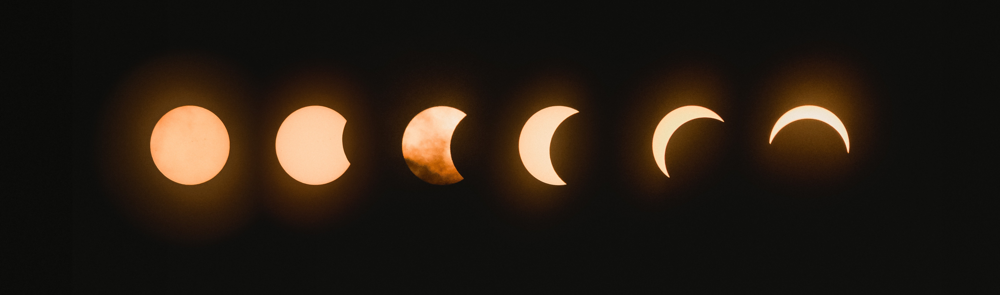

McKenna Wilds
poet & wanderer & mystic & feminist & bi woman

About
the folklorist & fabulist
McKenna Wilds is particularly fascinated by the weird and mystical. As a poet and storyteller, she enjoys exploring the dark or hidden beauty of old myths, legends, and folktales and how they might reveal truths about ourselves and our world.
the raging feminist
Inspired by her conservative, homeschooled childhood in the Bible Belt, McKenna Wilds now has a passion for exposing Christian patriarchy and encouraging this generation to choose love above all else. As a bisexual woman, she seeks to showcase the hopes and struggles of queerness through her writing, which is often inspired by her transition from conservative homeschooler to raging feminist.
the spiritualist
McKenna Wilds explores the minimalism of spirituality – how it’s often the little things that feel the most divine, like a calm Saturday morning, a deep breath, a long conversation with a loved one, or wildflower that blooms after the last snow. Her writing often reflects her experiences discovering healthy spirituality, a love for life, and a sense of awe.
the old soul
Over the years, McKenna Wilds has lived in Florida, Georgia, South Carolina, Alabama, California, and now Colorado with her husband and goldendoodle. Most nights, she lives wild and free until 9 pm when she'll be found cozy in bed with a good book, a cup of tea, and too many blankets.
Copyright © 2023 McKenna Wilds All Rights Reserved